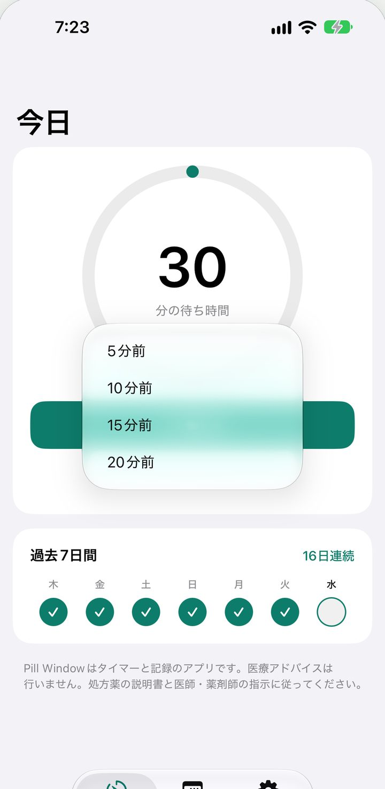
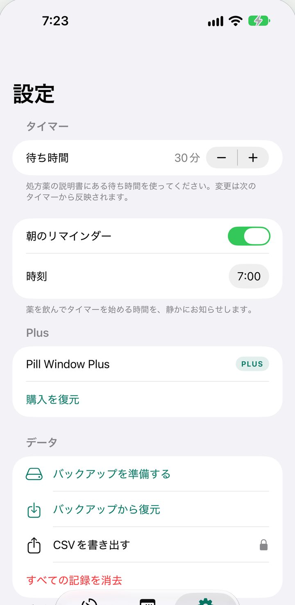

ワンタップ
ワンタップでカウントダウン。
ロック画面とダイナミックアイランドにカウントダウンを表示。待ち時間が終わると通知でお知らせします（通知をオンにした場合）。
- もう何度も時計を見なくていい。
- 好きな時刻に朝のリマインダー（任意）。
飲み忘れ防止と、待ち時間の管理。
毎日の薬の中には、空腹時に飲み、朝食やコーヒーまで一定の時間を空けるものがあります。Pill Window は、その待ち時間を代わりに見守るタイマーです。「飲んだ」をタップすると、ロック画面でカウントダウンが始まります。

ワンタップ
ロック画面とダイナミックアイランドにカウントダウンを表示。待ち時間が終わると通知でお知らせします（通知をオンにした場合）。

少し前に飲んでいたら
数分前に飲んでいたら、開始時刻を戻せます。実際に飲んだ時刻からカウントダウンが進みます。

ひと月の記録を、カレンダーで
飲んだ日と記録のない日が、ひと目で分かります。日付をタップすると詳細を表示します。

説明書のとおりに
待ち時間は処方薬の説明書に合わせて設定できます（10〜180分、初期値は30分）。
開いてタップするだけ。アカウントの作成もログインもありません。
記録は iPhone の中に保存します。オフラインで動作します。
トラッキング、分析、広告はありません。
基本の機能は、期限なしで。
任意のサブスクリプション。年額プランは無料トライアルから始まります。
価格は登録前にアプリ内で表示します。管理・解約は「設定」›「ユーザ名」›「サブスクリプション」からいつでもできます。
いいえ。処方薬の説明書に合わせて、10〜180分の間でご自身で設定します。Pill Window は医療上の助言や用量の指示を行いません。
数分前に飲んでいたら、開始時刻をさかのぼれます。まったく記録していなかった日も、30日前までならあとから追加できます。
待ち時間の終了をお知らせするには必要です。通知がオフだと、待ち時間が終わった瞬間にお知らせできません。
すべて iPhone の中だけです。アカウント、トラッキング、分析、広告はありません。オフラインで動作します。
タイマー、通知、ロック画面のカウントダウン、朝のリマインダー、直近30日間の記録は無料です。Plus では初日からのすべての記録、傾向、CSV 書き出しが使えます。
Pill Window はタイマーと記録のためのアプリです。医療上の助言、用量の指示、治療の推奨は行いません。必ず処方薬の説明書と、医師・薬剤師の指示に従ってください。